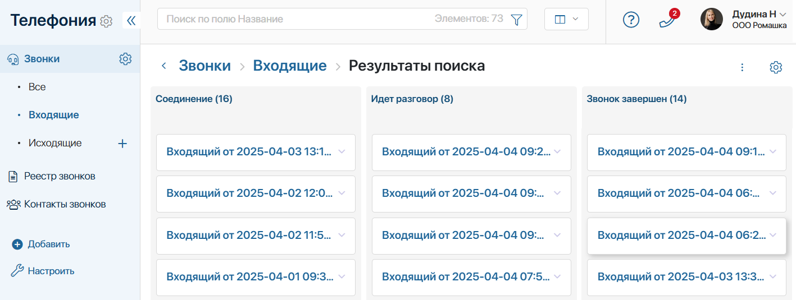
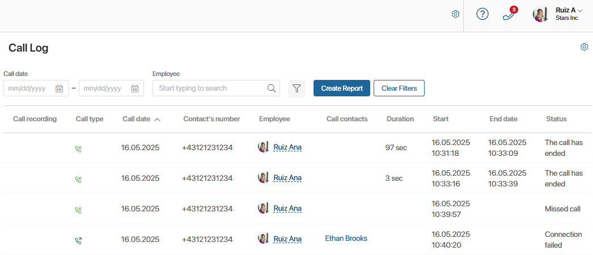

Call data that is received and processed in BRIX is stored in the Telephony workspace.
It includes:
- Calls app. During a call, an item with information about the call is created in the app. You can track the call status and view information about it.
- Call Log page. The table collects call records. You can search for call records by parameters, for example, only incoming calls or calls of a certain sales rep.
- Call contacts service app. It automatically records contact details of clients for displaying in the call log. The app is not intended for user work. Do not configure any settings in it. Changes will cause errors in telephony operation.
The Telephony workspace is available when activating one of the paid CRM solutions, which includes BRIX Communication Management.
Calls
The app automatically creates all call records in BRIX. An employee can view information about calls, track their statuses, listen to the call recording, etc.

Using the folder tree configured in the app, items are sorted into folders:
- All. You can view all call records.
- Incoming. Only calls received in the system are displayed.
- Outgoing. Only calls initiated by the manager are displayed.
By default, the records are presented as a kanban board that shows the call statuses: Connecting, The call is in progress, The call has ended, etc.
Click a call name to open its page. The following information is available:
- Call duration.
- Contact details.
- Sales rep’s full name.
- Items from other apps linked to the call, such as leads or deals.
- For completed calls, the notes left by the sales rep and the call recording are displayed.
Call Log
With the help of the call log, a sales manager can keep track of sales reps’ interactions with clients, and a certain employee can find records of their calls and use the data to work with sales.
The Call Log page displays all calls in the form of a table.

You can:
- View data about a call: its type, date, duration, status, etc.
- Use the preset filters to find the desired call. To do this, set the search conditions and press the Create Report button.
- Listen to the call recording. The storage period of recordings is determined by the provider. During this period, you can listen to the recordings and download them to your computer. If the recording is deleted by the provider, you will see an error message.
The system administrator can modify the registry settings: select options for filtering and properties of the Calls app to display in the table. Read more about how to do this in the Call log article.
Export and import the Telephony workspace
You can migrate the Telephony workspace to another company to export:
- Data from the Calls app and the Call log page.
- Call page settings.
- Call summary page settings.
To do this, click the gear icon next to the workspace name and select Workspace Export. After verification, save the resulting .e365 file. Read more in the Export a workspace article.
For the client to be identified correctly during the call, the new company must have the same contact app that is linked to telephony in Administration > Set Up Call. If it is a custom app:
- Create a solution that includes the Telephony workspace and the app with the contacts. Migrate the solution to another company.
- Use configuration export.
To upload the Telephony workspace data and page settings, import the .e365 file into the new company.
Found a typo? Select it and press Ctrl+Enter to send us feedback